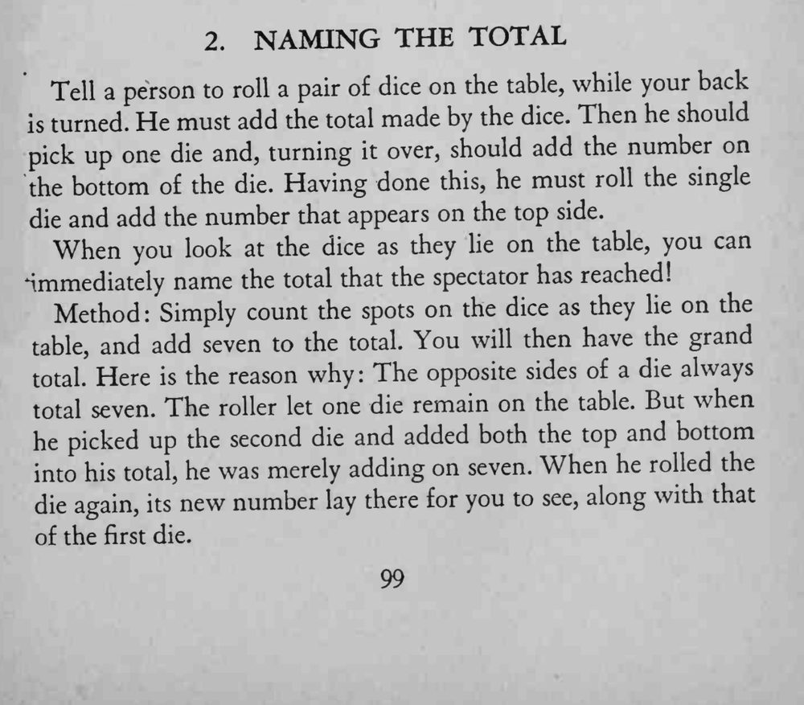

观众背对魔术师掷两枚骰子、加总、翻一枚加底面、再掷一枚加顶面，魔术师回头看一眼就能说出他算出的总数。
骰子相对两面的点数之和恒为 7，这是全部秘密；加 7 的时候别算错。

Tell a person to roll a pair of dice on the table, while your back turned. He must add the total made by the dice. Then he should pick up one die and, turning it over, should add the number on the bottom of the die. Having done this, he must roll the single die and add the number that appears on the top side. When you look at the dice as they lie on the table, you can immediately name the total that the spectator has reached! Method: Simply count the spots on the dice as they lie on the table, and add seven to the total. You will then have the grand Here the reason why: The opposite sides of a die always total. is total seven. The roller let one die remain on the table. But when he picked up the second die and added both the top and bottom into his total, he was merely adding on seven. When he rolled the die again, new number lay there for you to see, along with that its of the first die.